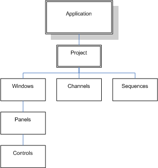
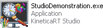
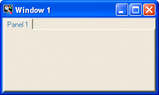

A KineticaRT Studio application is located in a folder on your file system. The application can be installed simply by copying this folder onto the target machine. The application folder contains:


This is the file that the user opens to run the application.
You can also use a shortcut to this file to open the application. It is normal to place a shortcut in the Windows Start menu / Program Files directory (E.g. C:\Documents and Settings\All Users\Start Menu\Programs\YourCompany).
The file may be renamed if you wish to give your application a different name. The application will need to open a project (.ksp) file to obtain its configuration information; by default this has the same name as the .exe file so if you are renaming the .exe file then rename the .ksp file as well.
If you are using Visual Studio then you can replace this file by your own version which loads other software as well as the KineticaRT.Studio.Project.
These contain the executable code for the KineticaRT Studio application and all its components. When you are installing your application these should be copied into the application directory. A few of these .dll files may require extra installation; for example the OpcClient has some COM dlls as well as the .NET dll since OPC is a COM protocol, the COM dlls will need to be registered with the Windows regsrvr32.exe.
This contains some project settings and a list of other files to load as part of this project including window, channel and sequence files.
When you run the application it will load one project file which by default has the same name as the .exe file.
If you want to have more than one project, it is recommended that you copy the entire application folder and optionally rename the executable and project files in the copy. You may however just copy the project and .exe files and rename them thus sharing the same window, channel and sequence files between projects.

Each window file contains a definition of a window. This includes some window settings and a list of panels displayed in the window.
Each channel file contains a list of channels to be included in the project.
Some examples of channels:
Each sequence file contains a single sequence.
Sequences are either C# or Visual Basic source code files which KineticaRT Studio compiles into .dll executable files which it then loads and executes.
The sequences are genuine .NET executables which have access to the full .NET facilities so anything is possible. Since they are compiled, they will execute as fast as any other .NET executable so performance should not be a problem.
In addition to the standard .NET facilities, some features have been added to simplify the writing of test sequences. For example the wait function allows you to pause the sequence until one of the channels defined in the channel files meets a condition.
E.g. (in C# format):
StartEngine () ;
// Allow engine to settle before starting test
Wait ("EngineStarted") ;
DesiredEngineSpeed = 800 ;
Wait ("EngineSpeed < 850") ;
// Do tests
StartIdleTest () ;
Each panel file defines part of a window and may be used in more than one window.
One use for panel files is to define the contents of a tab on a window.
The following example is set up for use with two monitors. There are two windows, one for each monitor. There is a main (control) panel on the right monitor and two display panels on the left monitor. The display panels are replicated in the right window so that you can select any combination of two display panels to view at once.
A panel can contain sub-panels for if you wish to share a part of a panel with other panels.
The panel files are stored as .dll files containing executable code and should not be edited. When the panel files are saved, a C# (.cs) source code version of the file is also saved. It is not recommended that you modify the .cs file since your changes may be lost the next time the panel is saved. Both the .dll and .cs files can be used in your own Visual Studio applications if you wish (A design time license would be required for all KineticaRT components used).